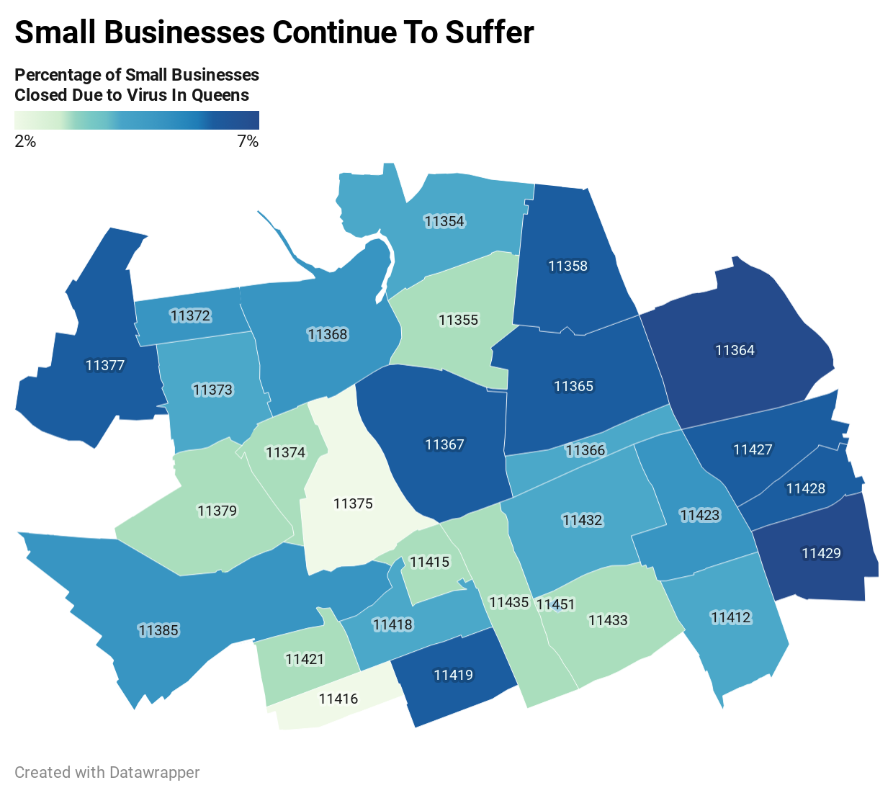

Shuttered storefronts along Metropolitan Avenue in Forest Hills earlier in 2020.Photo by David Russell.
Small businesses continue to stay closed 9 months after start of Coronavirus Pandemic.
By Richard Heaton
December 8, 2020
Small businesses around the city continue to suffer due to closures and lack of activity
Whether it's due to mandated closures, decreased customer activity, or lack of physical staff, there are plenty of small businesses such as delis, general stores, and select services that remain closed. Throughout the borough of Queens, nearly 10% of small businesses have yet to reopen.
"I closed up shop for two months," said Hollis deli owner Rudy Garland. "I had 3 others working the sandwiches and store but they looked for other work in the meantime. When I tried reopening, I couldn't find anyone who wanted to work in a deli and we had to stay closed."
